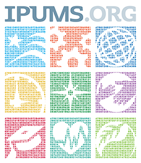

Feeling inspired by JuliaHealth projects? This guide walks you through creating and sharing your own blog post on our website using Quarto. It’s easier than you think!
Learn about the specialized focus areas emerging within the JuliaHealth community and how you can contribute to these exciting sub-ecosystems.
Reflections on building an end-to-end PLP pipeline in Julia tools - lessons learned, current challenges, and future directions.
Part 2 of the PLP-Pipeline blog series – how we preprocess OMOP CDM data, extract features, and train ML models using Julia tools
Kicking off the PLP-Pipeline blog series - how we define research questions and construct cohorts using OMOP CDM and Julia tools.
MedPipe3D - Medical segmentation pipeline with dataset-wide functions and augmentations.
A summary of my project for Google Summer of Code - 2024
My experience as a GSoC co-mentor within JuliaHealth
A summary of my project for Google Summer of Code

Post description
@online{untitled, author = {}, langid = {en} }